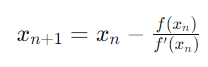
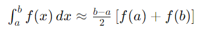
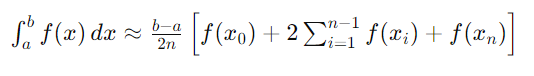

Este es un proyecto desarrollado por un equipo de 3 ingenieros de software.
¡Bienvenido a nuestra página! Aquí, te ofrecemos herramientas interactivas para resolver ecuaciones y encontrar áreas bajo curvas de manera precisa y eficiente. Nuestro enfoque se centra en dos métodos fundamentales: el método de Newton-Raphson y la regla del trapecio. Ambos métodos son pilares en el análisis numérico y tienen aplicaciones extensas en matemáticas, ingeniería y ciencias aplicadas.
Método de Newton-Raphson
El método de Newton-Raphson es un algoritmo iterativo utilizado para encontrar aproximaciones sucesivas de las raíces de una función. Dado un valor inicial cercano a la raíz, este método utiliza la derivada de la función para converger rápidamente hacia la solución. La fórmula de actualización es:

Donde:
- \( x_n \) es la aproximación actual.
- \( f(x_n) \) es el valor de la función en \( x_n \).
- \( f'(x_n) \) es el valor de la derivada de la función en \( x_n \).
Este método es altamente efectivo cuando se tiene una buena estimación inicial y la función es diferenciable en la vecindad de la raíz.
Regla del Trapecio
La regla del trapecio es una técnica de integración numérica utilizada para calcular el área bajo una curva. Esta regla aproxima la región bajo la curva mediante una serie de trapezoides y suma sus áreas para obtener una estimación de la integral definida. La fórmula básica para un intervalo \([a, b]\) es:

Para una mejor precisión, el intervalo puede dividirse en \(n\) subintervalos, aplicando la fórmula de manera repetida:

Donde:
- \( x_0 = a \)
- \( x_n = b \)
- \( x_i \) son los puntos intermedios entre \(a\) y \(b\).
La regla del trapecio es sencilla de implementar y proporciona resultados precisos con un número adecuado de subintervalos.
Esperamos que encuentres nuestras herramientas útiles y que te ayuden a comprender y aplicar estos métodos fundamentales de cálculo numérico. ¡Comienza a explorar y resolver tus problemas matemáticos con facilidad!